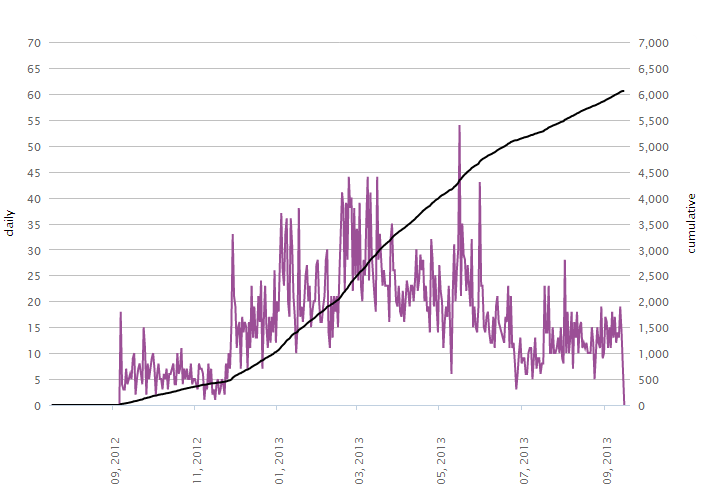
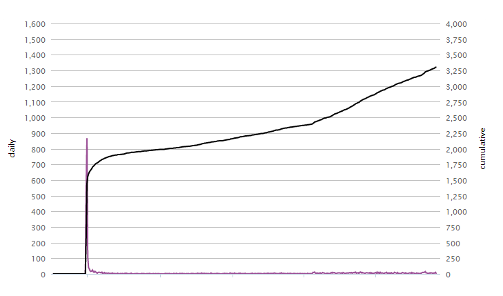
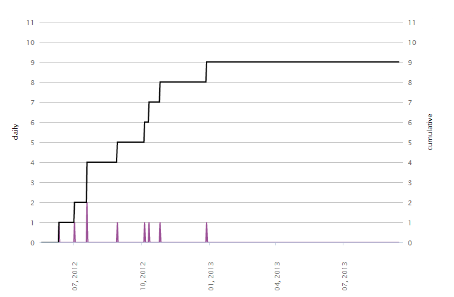
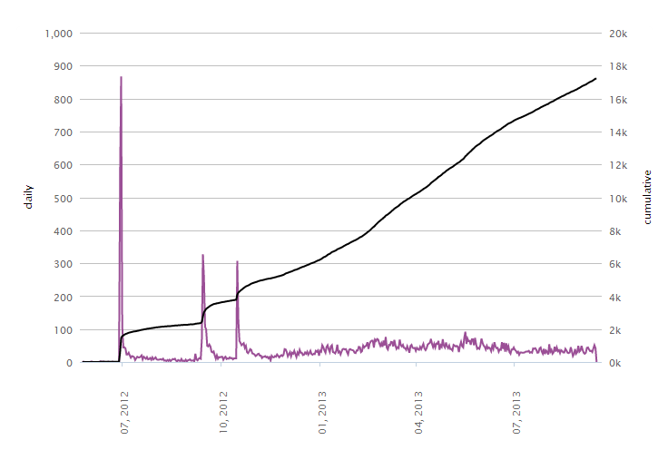
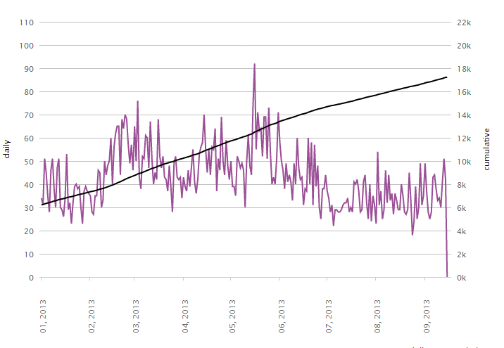
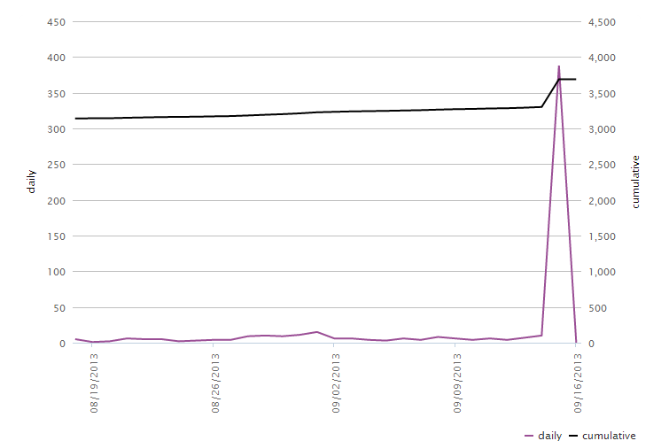
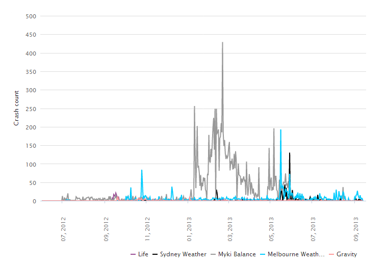

Windows Phone Download Stats
Melbourne weather, I'm sure that's a correlation between temperature and downloads.

Falling stars, put it in the game category and it gets shitloads of downloads. at first. but then after re-categorizing to children it starts to pick up again. Gotta get that black line going up.

This is more the reality for a lot of crap i think. 9 downloads in 4 months? :) and then I killed it.

My whole portfolio. Can you spot the "game" releases?

Another one, just looking at 2013 so far, ticking along at about 35 downloads a day, mostly weather, myki and Falling stars.

This week Falling Stars was "featured" in the Chile and then the Spanish markets. I'm told I should have put a price on it, then I might have made... 20 bucks?

At least i don't crash as much. 400+ crashes in a day? Ouch! Myki was down I think...
